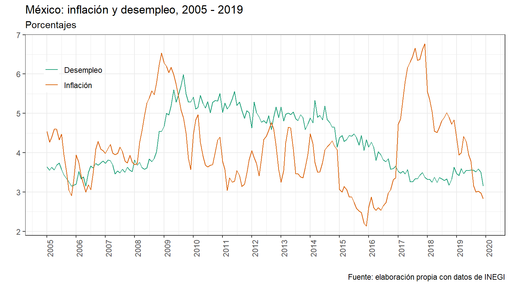
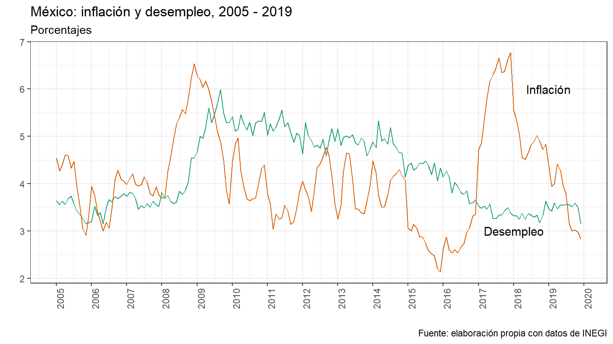

rm(list=ls()) Operaciones básicas:
Comunmente trabajamos con objetos, los que definimos con “<-” (tip: en windows alt + tecla - pone la flechita automáticamente), para luego utilizar operaciones básicas sobre estos objetos.
a <- 'a' # Caracter
b <- 6 # Entero
c <- 4
b+c # Suma## [1] 10b%%c # Módulo## [1] 2T == TRUE # T expresion corta de verdadero## [1] TRUEF == FALSE # F expresion corta de falso## [1] TRUEb < c # Valor logico## [1] FALSE2+2 == 5 # Valor logico## [1] FALSEb != c # Valor lógico## [1] TRUELas operaciones matemáticas de la sección anterior sólo funcionan con valores numéricos, por ello es importante que cuando trabajemos con números éstos tengan el tipo de dato correcto. Para verificar esto existe la función class().
class("1")## [1] "character"class(1)## [1] "numeric"También puede que llegues a requerir los operadores lógicos:
Pues, por ejemplo, usar 3 <x <7 para verificar si x está entre 3 y 7 no funcionará en R; necesitarás 3 <x & x <7 para eso.
# Ejemplo
x <- 5
3 <x & x <7## [1] TRUETambién puede ser que necesites las declaraciones condicionales, como if, if…else y else if. Se puede utilizar el if de manera independiente de los otros dos, pero el else if y el else requieren siempre que haya primero un if. La estrucutra básica de los tres combinados la siguiente:
# if(condition1) {
# expr1
# } else if(condition2) {
# expr2
# } else {
# expr3 }Es decir, si se cumple tal condición (indicada entre paréntesis), entonces haz lo que aparecé entre {}. Si la condición resulta FALSE, entonces R hace lo que está entre {} después del else. El else if indica, si la primera condición no se cumple, pero se cumple la segunda condición entre paréntesis, entonces realiza tal acción.
El término factor se refiere a un tipo de datos utilizado para almacenar variables categóricas. La diferencia entre una variable categórica y una variable continua es que una variable categórica puede pertenecer a un número limitado de categorías. Una variable continua, por otro lado, puede corresponder a un número infinito de valores.
El tipo de dato factor se utiliza principalmente para resumir datos por categorías o identificar cláramente cosas en una gráfica, más adelante veremos algún ejemplo de cómo usarlos. Puedes crear factores con la función factor().
Ejemplo. Un vector que contiene 5 observaciones del sexo de una población contiene sólo dos factores o niveles, “hombre” y “mujer”, que se pueden resumir fácilmente como se muestra a continuación.
sex <- c("Male","Female","Female","Male","Male")
fac_sex <- factor(sex)
# Puedes renombrar los niveles
levels(fac_sex) <- c("Mujer", "Hombre")
fac_sex## [1] Hombre Mujer Mujer Hombre Hombre
## Levels: Mujer Hombre# Resumir los datos por factores
summary(fac_sex)## Mujer Hombre
## 2 3Los vectores son uno de los objetos más usados en R. Los vectores son matrices columna (\(n\mathrm{x}1\)) que pueden contener datos numéricos, datos de caracteres o datos lógicos, i.e. un vector es una herramienta simple para almacenar datos. Para crear un vector se usa la función combinar c().
vector_numerico <- c(1, 2, 3)
vector_caracter <- c("a", "b", "c")Se puede asignar un nombre a cada elemento de un vector con la función names().
names(vector_numerico) <- vector_caracter
#Nótese que el primer renglón son sólo los nombres de las variables
vector_numerico## a b c
## 1 2 3Las operaciones básicas también funcionan con vectores.
# Creamos otro vector
vector_numerico2 <- c(5*1.5, 7-2, 7+3)
names(vector_numerico2) <- vector_caracter
# Suma de vectores
vector_numerico + vector_numerico2## a b c
## 8.5 7.0 13.0# Producto de vectores (nótese que el producto es elemento a elemento)
vector_numerico * vector_numerico2## a b c
## 7.5 10.0 30.0# Valores lógicos con vectores
vector_numerico2 != 5## a b c
## TRUE FALSE TRUEAlgunas funciones útiles.
rep('R', times=3) # Repite la letra R el número de veces que se indica## [1] "R" "R" "R"sqrt(9) # Raíz cuadrada de 9## [1] 31:10 # Secuencia 1 a 10## [1] 1 2 3 4 5 6 7 8 9 10seq(1, 10, 0.5) # Secuencia del 1 a 10 con incrementos de 0.5## [1] 1.0 1.5 2.0 2.5 3.0 3.5 4.0 4.5 5.0 5.5 6.0 6.5 7.0
## [14] 7.5 8.0 8.5 9.0 9.5 10.0vector_numerico2[2] # Acceder al segundo valor de un vector## b
## 5vector_numerico2["b"] # Acceder al segundo valor de un vector que tiene nombre## b
## 5vector_numerico2[2:3] # Acceder al 2do y tercer valor de un vector ## b c
## 5 10vector_numerico2[c("b", "c")] # Acceder al 2do y tercer valor de un vector que tiene nombre## b c
## 5 10sum(vector_numerico) # Suma de los elementos indicados## [1] 6mean(vector_numerico2) # Promedio simple## [1] 7.5min(vector_numerico2) # Obtener el valor minimo de un vector## [1] 5max(vector_numerico2) # Obtener el valor máximo de un vector## [1] 10En R, una matriz es una colección de elementos del mismo tipo de datos (numéricos, caracteres o lógicos) organizados en un número fijo de filas y columnas.
Las matrices se crean con la función matrix(), primero se indica el conjunto de datos que conforman la matriz, luego se le indica el número de filas o columnas (o ambos), y byrow le indica que queremos que ponga los datos empezando por las columnas.
A <- matrix(1:6, ncol=2, byrow = TRUE)
B <- matrix(seq(2,18,2), ncol=3, byrow = T)Para ponerle nombre a las filas y columnas de la matriz A
colnames(A) <- c("X","Y")
rownames(A) <- c("A","B","C")
A## X Y
## A 1 2
## B 3 4
## C 5 6Para sumar los elementos de las filas de una matriz usamos la función rowSums(). Se puede hacer lo mismo con las filas conla función colSums().
rowSums(A)## A B C
## 3 7 11colSums(A)## X Y
## 9 12Similar a lo que ha aprendido con los vectores, los operadores estándar como +, -, /, *, etc. funcionan elemento a elemento en R (por lo que para sumar o multiplicar dos matrices estas deben tener la misma dimensión).
t(A)## A B C
## X 1 3 5
## Y 2 4 6solve(B^2) #Elevamos B al cuadrado porque sino no era invertible## [,1] [,2] [,3]
## [1,] 0.3229167 -0.2916667 0.09375000
## [2,] -0.5416667 0.4166667 -0.12500000
## [3,] 0.2326389 -0.1527778 0.04513889Para realizar la multiplicación de matrices convencional (al igual que en álgebra lineal), utilizamos el comando %*%.
B%*%A## X Y
## [1,] 44 56
## [2,] 98 128
## [3,] 152 200Al igual que con los vectores, seleccionamos elementos de una matriz usando [] justo después de la matriz. En este caso, se usa con una coma enmedio [,] donde el primer elemento indica el número de fila y el segundo el número de columna. Si, por ejemplo, el segundo elemento se deja en blanco, R tomará todas las columnas.
B[1,2]## [1] 4B[1:2,]## [,1] [,2] [,3]
## [1,] 2 4 6
## [2,] 8 10 12Se usa el comando cbind para unir columnas, y rbind para unir filas. Nótese que los argumentos deben tener la misma cantidad de renglones en el caso de cbind, y la misma cantidad de columnas en el caso de rbind.
cbind(A,B)## X Y
## A 1 2 2 4 6
## B 3 4 8 10 12
## C 5 6 14 16 18rbind(A,B[,1:2])## X Y
## A 1 2
## B 3 4
## C 5 6
## 2 4
## 8 10
## 14 16Un data frame o conjunto de datos presenta las variables del conjunto como columnas y las observaciones como filas. Son esencialmente lo mismo que las matrices, pero a diferencia de estas, un data frame puede almacenar distintos tipos de datos al mismo tiempo.
Puedes seleccionar y combinar distintos elementos de un data frame al igual que lo hicimos con las matrices, sólo que ahora hay una forma más sencilla de seleccionar una columna en particular: nombre_base$variable, i.e. colocando el signo de pesos “$” justo entre el nombre de la base y en nombre de la variable (es más sencillo de lo que parece aquí).
Conviene siempre dar un primer vistazo al data frame con dos funciones:
Los ejemplos de data frames los dejamos para la sección de importar bases de datos, pues ésta es la forma en que R interpreta la mayoría de datos que utilizamos.
Una lista en R es un objeto que puede almacenar distintos tipos de objetos al mismo tiempo, por ejemplo, matrices, vectores, data frames, etc. Es relevante conocer este tipo de objeto porque cosas como las regresiones o las bases de datos espaciales (para hacer mapas) son interpretadas como listas en R.
Puedes crear una lista con la función list(). Por poner un ejemplo:
mi_lista <- list(vector_numerico, A, c(a,b))Nótese que la lista contiene tres objetos indicados entre paréntesis cuadrados dobles “[[]]”, el primero es un vector numérico, el segundo un matriz y el tercero un vector de carateres.
Para seleccionar elementos de una lista primero debes indicar el objeto dentro de la lista con los [[]], y luego con un sólo [] el elemento deseado. Por ejemplo:
mi_lista[[3]][1]## [1] "a"Por ahora no nos compliquemos con las listas, éstas creo que serán útiles, sobre todo, en temas un poco más avanzados como hacer mapas o extraer un elemento particular de una regresión.
Las funciones en R son las que van seguidas de paréntesis, ya hemos usados muchas de ellas en este punto. Cada función tiene sus propios argumentos (algunas ni tienen), unos los tienes que indicar obligatoriamente, y otros están definidos por default así que los puedes cambiar si es necesario.
Por ejemplo, la función arg() te dice los distintos argumentos que tiene otra función.
args(matrix)## function (data = NA, nrow = 1, ncol = 1, byrow = FALSE, dimnames = NULL)
## NULLHay dos formas de indicar los argumentos a una función de R:
Siempre se recomienda ver la documentación de cada función antes de usarla para ver lo que tienes que indicarle, o bien para ver qué más puede hacer por ti. Para acceder a la documentación de una función puedes usar cualquiera de los siguientes caminos:
# help(matrix)
# ?matrix
# Seleccionar la función y presionar F1Si bien es sencillo crear tus propias funciones en R, la mayoría del tiempo recurrirás a funciones creadas por expertos en la programación de R, muchas de las cuales no vienen instaladas por default. Instalar paqueterías de 3ros es muy sencillo, sólo requiere de dos pasos:
El primer paso sólo deberás hacerlo una vez en tu computadora, pero el segundo deberás hacerlo cada que inicies un nuevo espacio de trabajo.
Una de las fuentes más comunes para descargar datos en México es el Banco de Información Económica (BIE) del INEGI. Básicamente todos los tipos de archivos de datos se leen de la misma forma, con ligeras variantes entre unos y otros, así que si dominas una forma será fácil leer otros tipos de archivos.
Para poner un ejemplo descargamos datos de 2005 a 2019 de inflación y desempleo en formato csv. Todas las bases descargadas de ahí tienen la misma estructura, la primera fila tiene el tipo de periodicidad, en este caso mensual, y la segunda fila el nombre de las variables, que es la ruta mediante la cual se obtuvo, lo que no es útil para procesar los datos.
Utilizamos la función read.csv para leer el archivo, el primer argumento contiene la ruta del archivo, usamos la opción skip para saltarnos las primeras dos filas del archivo, lo que combinamos con la opción header = FALSE para indicar que la primera fila del archivo no contiene los nombres de las variables, los cuales hemos determinado nosotros con la opción col.names. También hay que tener en cuenta que las bases descargadas del BIE suelen tener notas al final de los datos, si no las consideramos la base no se cargará de manera adecuada, lo cual podemos solucionar simplemente indicando el número máximo de renglones que queremos que lea, en este caso nuestro último renglón con datos es el 182, menos dos que quitamos al inicio, 180, lo cual indicamos con la opción nrows.
baseCP <- read.csv("https://raw.githubusercontent.com/e-maruri/e-maruri.github.io/master/Bases/BIE_Des_Inf_2005-2019.csv",
header = F,
skip = 2,
nrows = 180,
col.names = c("Periodo", "Desempleo", "Inflacion", "Indice_inf"))
# La función str nos dice la estructura de las variables en nuestro data frame
str(baseCP)## 'data.frame': 180 obs. of 4 variables:
## $ Periodo : Factor w/ 180 levels "2005/01","2005/02",..: 1 2 3 4 5 6 7 8 9 10 ...
## $ Desempleo : num 3.64 3.55 3.63 3.57 3.68 ...
## $ Inflacion : num 4.54 4.27 4.39 4.6 4.6 4.33 4.47 3.95 3.51 3.05 ...
## $ Indice_inf: num 58.3 58.5 58.8 59 58.8 ...Nótese que la variable Periodo no está en formato fecha, lo cual es un problema al momento de procesar la información, así que ahora veremos cómo convertirla al formato adecuado. Utilizaremos la libreria lubridate (que tienes que instalar previamente). Esta libreria tiene varias funciones cuya idea básica es indicarle en qué forma está escrita la fecha y el programa se encarga de convertirlo al formato adecuado. Para ver las funciones para otros formatos de fecha consulta la información de lubridate.
En este caso nuestra fecha tiene la forma de “y/m”, es decir primero se indica el año y luego el mes, por lo que utilizaremos la función ymd(), añadiendo la opción truncated=2 para indicarle que los dos últimos dígitos de la fecha, que corresponden al día, no aparecen en nuestro formato.
#library(lubridate)
baseCP$Periodo <- ymd(baseCP$Periodo, truncated = 2)
str(baseCP)## 'data.frame': 180 obs. of 4 variables:
## $ Periodo : Date, format: "2005-01-01" ...
## $ Desempleo : num 3.64 3.55 3.63 3.57 3.68 ...
## $ Inflacion : num 4.54 4.27 4.39 4.6 4.6 4.33 4.47 3.95 3.51 3.05 ...
## $ Indice_inf: num 58.3 58.5 58.8 59 58.8 ...Ahora la variable periodo está en formato fecha y podremos trabajar con ella cómodamente, como se verá más adelante, en particular en la sección de gráficas.
Otra fuente de datos importante es el Sistema de Información Económica (SIE) de Banxico. Dejo aquí cómo cargar bases de datos de ahí porque estas tienen ciertas particularidades.
Descargamos datos mensuales del indice de precios y cotizaciones (IPC), la tasa de interés sobre Cetes a 28 días y la tasa de interés sobre Udibonos a 10 años, esta última para mostrar qué ocurre cuando el periodo para el que descargamos los datos difiere entre series. Los datos faltantes en la base en las bases del SIE se representan con N/E, lo cual le tenemos que indicar a la función read.csv para que los lea de manera correcta, esto se hace con la opción na.strings como se muestra a continuación.
banxico <- read.csv("https://raw.githubusercontent.com/e-maruri/e-maruri.github.io/master/Bases/SIE_IPC_Cetes28_1990-2019.csv",
header = F,
skip = 18,
col.names = c("Periodo", "IPC", "Cetes28", "Udibonos10"),
na.strings = "N/E")
str(banxico)## 'data.frame': 365 obs. of 4 variables:
## $ Periodo : Factor w/ 365 levels "01/01/1990","01/01/1991",..: 1 32 63 94 125 156 186 216 246 276 ...
## $ IPC : num 445 473 490 526 650 ...
## $ Cetes28 : num 41.3 45.2 46.6 44.6 36.9 ...
## $ Udibonos10: num NA NA NA NA NA NA NA NA NA NA ...Nótese que una vez más la variable Periodo no está en formato fecha, así que la convertimos como hicimos antes. En este caso la fecha tiene el formato “d/m/y”, es decir, primero el día, luego el mes y al final el año, por lo que ahora usamos la función dmy() de lubridate.
banxico$Periodo <- dmy(banxico$Periodo)
str(banxico)## 'data.frame': 365 obs. of 4 variables:
## $ Periodo : Date, format: "1990-01-01" ...
## $ IPC : num 445 473 490 526 650 ...
## $ Cetes28 : num 41.3 45.2 46.6 44.6 36.9 ...
## $ Udibonos10: num NA NA NA NA NA NA NA NA NA NA ...También es un problema común que tienes tus datos en forma mensual pero los necesitas de manera trimestral o anual, lo cual se puede hacer fácilmente en R. Primero convertimos nuestra variable de interés en un objeto de series de tiempo de R, ts, y luego utilizamos la función aggregate como se muestra a continuación. En este caso usamos como método de agregación el promedio simple (mean), aunque se puede utilizar cualquier función que se desee con la opción FUN=.
#Convertir la serie a un objeto ts
IPC_men <- ts(banxico$IPC, start = 1990, frequency = 12)
#Utilizamos la función aggregate para convertirlo a otra unidad de tiempo
#Trimestral
IPC_trim <- aggregate(IPC_men, nfrequency = 4, mean)
#Anual
IPC_anual <- aggregate(IPC_men, nfrequency = 1, mean)Otro problema común es calcular tasas de crecimiento, esto lo hacemos fácilmente con un mutate y la función lag() de la libreria dplyr. A continuación un ejemplo con los índices de precios. Primero calculamos la inflación mensual, es decir la variación porcentual del índice de precios de un mes a otro, y luego la inflación anual, i.e. la variación porcentual del índice de precios de un mes respecto al mismo mes del año pasado, esto se hace añadiendo la opción n= para indicarle cuántos periodos atrás considerar el rezago.
baseCP <- baseCP %>% mutate(inf_mensual = ((Indice_inf/lag(Indice_inf))-1)*100,
inf_anual = ((Indice_inf/lag(Indice_inf, n=12))-1)*100)
head(baseCP[,-2], n=20)## Periodo Inflacion Indice_inf inf_mensual inf_anual
## 1 2005-01-01 4.54 58.30916 NA NA
## 2 2005-02-01 4.27 58.50343 0.33317341 NA
## 3 2005-03-01 4.39 58.76712 0.45072568 NA
## 4 2005-04-01 4.60 58.97642 0.35614168 NA
## 5 2005-05-01 4.60 58.82825 -0.25122538 NA
## 6 2005-06-01 4.33 58.77178 -0.09598788 NA
## 7 2005-07-01 4.47 59.00180 0.39137218 NA
## 8 2005-08-01 3.95 59.07226 0.11941242 NA
## 9 2005-09-01 3.51 59.30901 0.40078227 NA
## 10 2005-10-01 3.05 59.45458 0.24544915 NA
## 11 2005-11-01 2.91 59.88249 0.71973163 NA
## 12 2005-12-01 3.33 60.25031 0.61423467 NA
## 13 2006-01-01 3.94 60.60363 0.58640940 3.935000
## 14 2006-02-01 3.75 60.69636 0.15301369 3.748373
## 15 2006-03-01 3.41 60.77251 0.12546730 3.412437
## 16 2006-04-01 3.20 60.86162 0.14662132 3.196536
## 17 2006-05-01 3.00 60.59067 -0.44517837 2.995879
## 18 2006-06-01 3.18 60.64300 0.08635579 3.183866
## 19 2006-07-01 3.06 60.80929 0.27422069 3.063455
## 20 2006-08-01 3.47 61.11961 0.51030840 3.465846Hay muchos paquetes para hacer tablas como kable, kableExtra y stargazer.
Casi todo salio de aquí. Para usar kable debes instalar primero la libreria knitr. Ahora un ejemplo con nuestra matriz A.
kable(A,
caption = "Primera matriz creada en forma de tabla",
digits = 0, #para ponerle la cantidad de números después del punto
col.names = c("$X_i$","$Y_i$")
)| \(X_i\) | \(Y_i\) | |
|---|---|---|
| A | 1 | 2 |
| B | 3 | 4 |
| C | 5 | 6 |
En kable no se pueden cambiar los nombres a los renglones de una matriz, se tienen que poner previamente con el comando visto en la sección anterior. Además, para poner fórmulas o caracteres especiales se necesita una sintaxis específica, como se muestra a continuación.
rownames(B) <- c("$\\alpha$","$\\beta$","$\\gamma$")
kable(B, col.names = c("$\\eta$","$\\delta$","$\\iota$"))| \(\eta\) | \(\delta\) | \(\iota\) | |
|---|---|---|---|
| \(\alpha\) | 2 | 4 | 6 |
| \(\beta\) | 8 | 10 | 12 |
| \(\gamma\) | 14 | 16 | 18 |
Hacer más o menos presentable una tabla como la de la sección pasada resulta muy sencillo, sólo tenemos que modificar una de las opciones por default de kable para que aparerzcan en blanco los NA.
#Para que aparerzcan en blanco los NA's.
options(knitr.kable.NA = "")
kable(head(baseCP[,-2], n=20),
digits = 2,
col.names = c("Periodo", "Inflación", "IPC", "Inflación mensual", "Inflación anual"))| Periodo | Inflación | IPC | Inflación mensual | Inflación anual |
|---|---|---|---|---|
| 2005-01-01 | 4.54 | 58.31 | ||
| 2005-02-01 | 4.27 | 58.50 | 0.33 | |
| 2005-03-01 | 4.39 | 58.77 | 0.45 | |
| 2005-04-01 | 4.60 | 58.98 | 0.36 | |
| 2005-05-01 | 4.60 | 58.83 | -0.25 | |
| 2005-06-01 | 4.33 | 58.77 | -0.10 | |
| 2005-07-01 | 4.47 | 59.00 | 0.39 | |
| 2005-08-01 | 3.95 | 59.07 | 0.12 | |
| 2005-09-01 | 3.51 | 59.31 | 0.40 | |
| 2005-10-01 | 3.05 | 59.45 | 0.25 | |
| 2005-11-01 | 2.91 | 59.88 | 0.72 | |
| 2005-12-01 | 3.33 | 60.25 | 0.61 | |
| 2006-01-01 | 3.94 | 60.60 | 0.59 | 3.94 |
| 2006-02-01 | 3.75 | 60.70 | 0.15 | 3.75 |
| 2006-03-01 | 3.41 | 60.77 | 0.13 | 3.41 |
| 2006-04-01 | 3.20 | 60.86 | 0.15 | 3.20 |
| 2006-05-01 | 3.00 | 60.59 | -0.45 | 3.00 |
| 2006-06-01 | 3.18 | 60.64 | 0.09 | 3.18 |
| 2006-07-01 | 3.06 | 60.81 | 0.27 | 3.06 |
| 2006-08-01 | 3.47 | 61.12 | 0.51 | 3.47 |
La librería kableExtra (que debes instalar previamente) nos permite perzonalizar aún más las tablas de kable para que se vean más bonitas y añadir otras cosas como pie de página. Consulta este sitio para que veas ejemplos de lo que se puede hacer.
Las cosas de kableExtra se agregan con “pipes”, %>%. Simplemente añadiendo kable_styling() hace que se vea más bonita, pero puedes agregar otras opciones como colores, niveles, etc. El pie de página se pone con la opción footnote, por default lo pone en dos niveles, lo que aparece después de general_title aparece el primer renglón y lo de general sale en el segundo, pero como prefiero que salga todo sólo en un renglón lo pongo como se ve enseguida.
kable(head(baseCP[,-2], n=20),
digits = 2,
col.names = c("Periodo", "Inflación", "IPC",
"Inflación mensual", "Inflación anual")) %>%
kable_styling(full_width = F, bootstrap_options = "striped") %>%
footnote(general_title = "Fuente: elaboracion propia con datos de INEGI.", general = "")| Periodo | Inflación | IPC | Inflación mensual | Inflación anual |
|---|---|---|---|---|
| 2005-01-01 | 4.54 | 58.31 | ||
| 2005-02-01 | 4.27 | 58.50 | 0.33 | |
| 2005-03-01 | 4.39 | 58.77 | 0.45 | |
| 2005-04-01 | 4.60 | 58.98 | 0.36 | |
| 2005-05-01 | 4.60 | 58.83 | -0.25 | |
| 2005-06-01 | 4.33 | 58.77 | -0.10 | |
| 2005-07-01 | 4.47 | 59.00 | 0.39 | |
| 2005-08-01 | 3.95 | 59.07 | 0.12 | |
| 2005-09-01 | 3.51 | 59.31 | 0.40 | |
| 2005-10-01 | 3.05 | 59.45 | 0.25 | |
| 2005-11-01 | 2.91 | 59.88 | 0.72 | |
| 2005-12-01 | 3.33 | 60.25 | 0.61 | |
| 2006-01-01 | 3.94 | 60.60 | 0.59 | 3.94 |
| 2006-02-01 | 3.75 | 60.70 | 0.15 | 3.75 |
| 2006-03-01 | 3.41 | 60.77 | 0.13 | 3.41 |
| 2006-04-01 | 3.20 | 60.86 | 0.15 | 3.20 |
| 2006-05-01 | 3.00 | 60.59 | -0.45 | 3.00 |
| 2006-06-01 | 3.18 | 60.64 | 0.09 | 3.18 |
| 2006-07-01 | 3.06 | 60.81 | 0.27 | 3.06 |
| 2006-08-01 | 3.47 | 61.12 | 0.51 | 3.47 |
| Fuente: elaboracion propia con datos de INEGI. | ||||
También podemos agrupar filas y columnas para que se vea más bonita. Para las columnas usamos la función add_header_above indicando dentro de un vector el nombre y para cuántas columnas se utilizará ese grupo. Para las filas usamos la función pack_rows, con la opción index y la misma idea que para las columnas.
kable(head(baseCP[,-2], n=20),
digits = 2,
col.names = c("Periodo", "Inflación", "IPC",
"Inflación mensual", "Inflación anual")) %>%
kable_styling(full_width = F, bootstrap_options = "striped") %>%
footnote(general_title = "Fuente: elaboracion propia con datos de INEGI.", general = "") %>%
add_header_above(c(" " = 1, "INEGI" = 2, "Cálculo propio" = 2)) %>%
pack_rows(index = c("2005" = 12, "2006" = 8))| Periodo | Inflación | IPC | Inflación mensual | Inflación anual |
|---|---|---|---|---|
| 2005 | ||||
| 2005-01-01 | 4.54 | 58.31 | ||
| 2005-02-01 | 4.27 | 58.50 | 0.33 | |
| 2005-03-01 | 4.39 | 58.77 | 0.45 | |
| 2005-04-01 | 4.60 | 58.98 | 0.36 | |
| 2005-05-01 | 4.60 | 58.83 | -0.25 | |
| 2005-06-01 | 4.33 | 58.77 | -0.10 | |
| 2005-07-01 | 4.47 | 59.00 | 0.39 | |
| 2005-08-01 | 3.95 | 59.07 | 0.12 | |
| 2005-09-01 | 3.51 | 59.31 | 0.40 | |
| 2005-10-01 | 3.05 | 59.45 | 0.25 | |
| 2005-11-01 | 2.91 | 59.88 | 0.72 | |
| 2005-12-01 | 3.33 | 60.25 | 0.61 | |
| 2006 | ||||
| 2006-01-01 | 3.94 | 60.60 | 0.59 | 3.94 |
| 2006-02-01 | 3.75 | 60.70 | 0.15 | 3.75 |
| 2006-03-01 | 3.41 | 60.77 | 0.13 | 3.41 |
| 2006-04-01 | 3.20 | 60.86 | 0.15 | 3.20 |
| 2006-05-01 | 3.00 | 60.59 | -0.45 | 3.00 |
| 2006-06-01 | 3.18 | 60.64 | 0.09 | 3.18 |
| 2006-07-01 | 3.06 | 60.81 | 0.27 | 3.06 |
| 2006-08-01 | 3.47 | 61.12 | 0.51 | 3.47 |
| Fuente: elaboracion propia con datos de INEGI. | ||||
Para más glamour, el formato html nos permite presentar toda la tabla sin comer demasiado espacio, como muestro a continuación:
kable(baseCP[,-2],
digits = 2,
col.names = c("Periodo", "Inflación", "IPC",
"Inflación mensual", "Inflación anual")) %>%
kable_styling(full_width = T, bootstrap_options = "striped") %>%
footnote(general_title = "Fuente: elaboracion propia con datos de INEGI.", general = "") %>%
add_header_above(c(" " = 1, "INEGI" = 2, "Cálculo propio" = 2)) %>%
scroll_box(width = "800px", height = "300px")| Periodo | Inflación | IPC | Inflación mensual | Inflación anual |
|---|---|---|---|---|
| 2005-01-01 | 4.54 | 58.31 | ||
| 2005-02-01 | 4.27 | 58.50 | 0.33 | |
| 2005-03-01 | 4.39 | 58.77 | 0.45 | |
| 2005-04-01 | 4.60 | 58.98 | 0.36 | |
| 2005-05-01 | 4.60 | 58.83 | -0.25 | |
| 2005-06-01 | 4.33 | 58.77 | -0.10 | |
| 2005-07-01 | 4.47 | 59.00 | 0.39 | |
| 2005-08-01 | 3.95 | 59.07 | 0.12 | |
| 2005-09-01 | 3.51 | 59.31 | 0.40 | |
| 2005-10-01 | 3.05 | 59.45 | 0.25 | |
| 2005-11-01 | 2.91 | 59.88 | 0.72 | |
| 2005-12-01 | 3.33 | 60.25 | 0.61 | |
| 2006-01-01 | 3.94 | 60.60 | 0.59 | 3.94 |
| 2006-02-01 | 3.75 | 60.70 | 0.15 | 3.75 |
| 2006-03-01 | 3.41 | 60.77 | 0.13 | 3.41 |
| 2006-04-01 | 3.20 | 60.86 | 0.15 | 3.20 |
| 2006-05-01 | 3.00 | 60.59 | -0.45 | 3.00 |
| 2006-06-01 | 3.18 | 60.64 | 0.09 | 3.18 |
| 2006-07-01 | 3.06 | 60.81 | 0.27 | 3.06 |
| 2006-08-01 | 3.47 | 61.12 | 0.51 | 3.47 |
| 2006-09-01 | 4.09 | 61.74 | 1.01 | 4.09 |
| 2006-10-01 | 4.29 | 62.01 | 0.44 | 4.29 |
| 2006-11-01 | 4.09 | 62.33 | 0.52 | 4.09 |
| 2006-12-01 | 4.05 | 62.69 | 0.58 | 4.05 |
| 2007-01-01 | 3.98 | 63.02 | 0.52 | 3.98 |
| 2007-02-01 | 4.11 | 63.19 | 0.28 | 4.11 |
| 2007-03-01 | 4.21 | 63.33 | 0.22 | 4.21 |
| 2007-04-01 | 3.99 | 63.29 | -0.06 | 3.99 |
| 2007-05-01 | 3.95 | 62.98 | -0.49 | 3.95 |
| 2007-06-01 | 3.98 | 63.06 | 0.12 | 3.98 |
| 2007-07-01 | 4.14 | 63.33 | 0.42 | 4.14 |
| 2007-08-01 | 4.03 | 63.58 | 0.41 | 4.03 |
| 2007-09-01 | 3.79 | 64.08 | 0.78 | 3.79 |
| 2007-10-01 | 3.74 | 64.33 | 0.39 | 3.74 |
| 2007-11-01 | 3.93 | 64.78 | 0.71 | 3.93 |
| 2007-12-01 | 3.76 | 65.05 | 0.41 | 3.76 |
| 2008-01-01 | 3.70 | 65.35 | 0.46 | 3.70 |
| 2008-02-01 | 3.72 | 65.54 | 0.30 | 3.72 |
| 2008-03-01 | 4.25 | 66.02 | 0.72 | 4.25 |
| 2008-04-01 | 4.55 | 66.17 | 0.23 | 4.55 |
| 2008-05-01 | 4.95 | 66.10 | -0.11 | 4.95 |
| 2008-06-01 | 5.26 | 66.37 | 0.41 | 5.26 |
| 2008-07-01 | 5.39 | 66.74 | 0.56 | 5.39 |
| 2008-08-01 | 5.57 | 67.13 | 0.58 | 5.57 |
| 2008-09-01 | 5.47 | 67.58 | 0.68 | 5.47 |
| 2008-10-01 | 5.78 | 68.05 | 0.68 | 5.78 |
| 2008-11-01 | 6.23 | 68.82 | 1.14 | 6.23 |
| 2008-12-01 | 6.53 | 69.30 | 0.69 | 6.53 |
| 2009-01-01 | 6.28 | 69.46 | 0.23 | 6.28 |
| 2009-02-01 | 6.20 | 69.61 | 0.22 | 6.20 |
| 2009-03-01 | 6.04 | 70.01 | 0.58 | 6.04 |
| 2009-04-01 | 6.17 | 70.25 | 0.35 | 6.17 |
| 2009-05-01 | 5.98 | 70.05 | -0.29 | 5.98 |
| 2009-06-01 | 5.74 | 70.18 | 0.18 | 5.74 |
| 2009-07-01 | 5.44 | 70.37 | 0.27 | 5.44 |
| 2009-08-01 | 5.08 | 70.54 | 0.24 | 5.08 |
| 2009-09-01 | 4.89 | 70.89 | 0.50 | 4.89 |
| 2009-10-01 | 4.50 | 71.11 | 0.30 | 4.50 |
| 2009-11-01 | 3.86 | 71.48 | 0.52 | 3.86 |
| 2009-12-01 | 3.57 | 71.77 | 0.41 | 3.57 |
| 2010-01-01 | 4.46 | 72.55 | 1.09 | 4.46 |
| 2010-02-01 | 4.83 | 72.97 | 0.58 | 4.83 |
| 2010-03-01 | 4.97 | 73.49 | 0.71 | 4.97 |
| 2010-04-01 | 4.27 | 73.26 | -0.32 | 4.27 |
| 2010-05-01 | 3.92 | 72.79 | -0.63 | 3.92 |
| 2010-06-01 | 3.69 | 72.77 | -0.03 | 3.69 |
| 2010-07-01 | 3.64 | 72.93 | 0.22 | 3.64 |
| 2010-08-01 | 3.68 | 73.13 | 0.28 | 3.68 |
| 2010-09-01 | 3.70 | 73.52 | 0.52 | 3.70 |
| 2010-10-01 | 4.02 | 73.97 | 0.62 | 4.02 |
| 2010-11-01 | 4.32 | 74.56 | 0.80 | 4.32 |
| 2010-12-01 | 4.40 | 74.93 | 0.50 | 4.40 |
| 2011-01-01 | 3.78 | 75.30 | 0.49 | 3.78 |
| 2011-02-01 | 3.57 | 75.58 | 0.38 | 3.57 |
| 2011-03-01 | 3.04 | 75.72 | 0.19 | 3.04 |
| 2011-04-01 | 3.36 | 75.72 | -0.01 | 3.36 |
| 2011-05-01 | 3.25 | 75.16 | -0.74 | 3.25 |
| 2011-06-01 | 3.28 | 75.16 | 0.00 | 3.28 |
| 2011-07-01 | 3.55 | 75.52 | 0.48 | 3.55 |
| 2011-08-01 | 3.42 | 75.64 | 0.16 | 3.42 |
| 2011-09-01 | 3.14 | 75.82 | 0.25 | 3.14 |
| 2011-10-01 | 3.20 | 76.33 | 0.67 | 3.20 |
| 2011-11-01 | 3.48 | 77.16 | 1.08 | 3.48 |
| 2011-12-01 | 3.82 | 77.79 | 0.82 | 3.82 |
| 2012-01-01 | 4.05 | 78.34 | 0.71 | 4.05 |
| 2012-02-01 | 3.87 | 78.50 | 0.20 | 3.87 |
| 2012-03-01 | 3.73 | 78.55 | 0.06 | 3.73 |
| 2012-04-01 | 3.41 | 78.30 | -0.31 | 3.41 |
| 2012-05-01 | 3.85 | 78.05 | -0.32 | 3.85 |
| 2012-06-01 | 4.34 | 78.41 | 0.46 | 4.34 |
| 2012-07-01 | 4.42 | 78.85 | 0.56 | 4.42 |
| 2012-08-01 | 4.57 | 79.09 | 0.30 | 4.57 |
| 2012-09-01 | 4.77 | 79.44 | 0.44 | 4.77 |
| 2012-10-01 | 4.60 | 79.84 | 0.51 | 4.60 |
| 2012-11-01 | 4.18 | 80.38 | 0.68 | 4.18 |
| 2012-12-01 | 3.57 | 80.57 | 0.23 | 3.57 |
| 2013-01-01 | 3.25 | 80.89 | 0.40 | 3.25 |
| 2013-02-01 | 3.55 | 81.29 | 0.49 | 3.55 |
| 2013-03-01 | 4.25 | 81.89 | 0.73 | 4.25 |
| 2013-04-01 | 4.65 | 81.94 | 0.07 | 4.65 |
| 2013-05-01 | 4.63 | 81.67 | -0.33 | 4.63 |
| 2013-06-01 | 4.09 | 81.62 | -0.06 | 4.09 |
| 2013-07-01 | 3.47 | 81.59 | -0.03 | 3.47 |
| 2013-08-01 | 3.46 | 81.82 | 0.28 | 3.46 |
| 2013-09-01 | 3.39 | 82.13 | 0.38 | 3.39 |
| 2013-10-01 | 3.36 | 82.52 | 0.48 | 3.36 |
| 2013-11-01 | 3.62 | 83.29 | 0.93 | 3.62 |
| 2013-12-01 | 3.97 | 83.77 | 0.57 | 3.97 |
| 2014-01-01 | 4.48 | 84.52 | 0.89 | 4.48 |
| 2014-02-01 | 4.23 | 84.73 | 0.25 | 4.23 |
| 2014-03-01 | 3.76 | 84.97 | 0.27 | 3.76 |
| 2014-04-01 | 3.50 | 84.81 | -0.19 | 3.50 |
| 2014-05-01 | 3.51 | 84.54 | -0.32 | 3.51 |
| 2014-06-01 | 3.75 | 84.68 | 0.17 | 3.75 |
| 2014-07-01 | 4.07 | 84.91 | 0.28 | 4.07 |
| 2014-08-01 | 4.15 | 85.22 | 0.36 | 4.15 |
| 2014-09-01 | 4.22 | 85.60 | 0.44 | 4.22 |
| 2014-10-01 | 4.30 | 86.07 | 0.55 | 4.30 |
| 2014-11-01 | 4.17 | 86.76 | 0.81 | 4.17 |
| 2014-12-01 | 4.08 | 87.19 | 0.49 | 4.08 |
| 2015-01-01 | 3.07 | 87.11 | -0.09 | 3.07 |
| 2015-02-01 | 3.00 | 87.28 | 0.19 | 3.00 |
| 2015-03-01 | 3.14 | 87.63 | 0.41 | 3.14 |
| 2015-04-01 | 3.06 | 87.40 | -0.26 | 3.06 |
| 2015-05-01 | 2.88 | 86.97 | -0.50 | 2.88 |
| 2015-06-01 | 2.87 | 87.11 | 0.17 | 2.87 |
| 2015-07-01 | 2.74 | 87.24 | 0.15 | 2.74 |
| 2015-08-01 | 2.59 | 87.42 | 0.21 | 2.59 |
| 2015-09-01 | 2.52 | 87.75 | 0.37 | 2.52 |
| 2015-10-01 | 2.48 | 88.20 | 0.51 | 2.48 |
| 2015-11-01 | 2.21 | 88.69 | 0.55 | 2.21 |
| 2015-12-01 | 2.13 | 89.05 | 0.41 | 2.13 |
| 2016-01-01 | 2.61 | 89.39 | 0.38 | 2.61 |
| 2016-02-01 | 2.87 | 89.78 | 0.44 | 2.87 |
| 2016-03-01 | 2.60 | 89.91 | 0.15 | 2.60 |
| 2016-04-01 | 2.54 | 89.63 | -0.32 | 2.54 |
| 2016-05-01 | 2.60 | 89.23 | -0.45 | 2.60 |
| 2016-06-01 | 2.54 | 89.32 | 0.11 | 2.54 |
| 2016-07-01 | 2.65 | 89.56 | 0.26 | 2.65 |
| 2016-08-01 | 2.73 | 89.81 | 0.28 | 2.73 |
| 2016-09-01 | 2.97 | 90.36 | 0.61 | 2.97 |
| 2016-10-01 | 3.06 | 90.91 | 0.61 | 3.06 |
| 2016-11-01 | 3.31 | 91.62 | 0.78 | 3.31 |
| 2016-12-01 | 3.36 | 92.04 | 0.46 | 3.36 |
| 2017-01-01 | 4.72 | 93.60 | 1.70 | 4.72 |
| 2017-02-01 | 4.86 | 94.14 | 0.58 | 4.86 |
| 2017-03-01 | 5.35 | 94.72 | 0.61 | 5.35 |
| 2017-04-01 | 5.82 | 94.84 | 0.12 | 5.82 |
| 2017-05-01 | 6.16 | 94.73 | -0.12 | 6.16 |
| 2017-06-01 | 6.31 | 94.96 | 0.25 | 6.31 |
| 2017-07-01 | 6.44 | 95.32 | 0.38 | 6.44 |
| 2017-08-01 | 6.66 | 95.79 | 0.49 | 6.66 |
| 2017-09-01 | 6.35 | 96.09 | 0.31 | 6.35 |
| 2017-10-01 | 6.37 | 96.70 | 0.63 | 6.37 |
| 2017-11-01 | 6.63 | 97.70 | 1.03 | 6.63 |
| 2017-12-01 | 6.77 | 98.27 | 0.59 | 6.77 |
| 2018-01-01 | 5.55 | 98.79 | 0.53 | 5.55 |
| 2018-02-01 | 5.34 | 99.17 | 0.38 | 5.34 |
| 2018-03-01 | 5.04 | 99.49 | 0.32 | 5.04 |
| 2018-04-01 | 4.55 | 99.15 | -0.34 | 4.55 |
| 2018-05-01 | 4.51 | 98.99 | -0.16 | 4.51 |
| 2018-06-01 | 4.65 | 99.38 | 0.39 | 4.65 |
| 2018-07-01 | 4.81 | 99.91 | 0.54 | 4.81 |
| 2018-08-01 | 4.90 | 100.49 | 0.58 | 4.90 |
| 2018-09-01 | 5.02 | 100.92 | 0.42 | 5.02 |
| 2018-10-01 | 4.90 | 101.44 | 0.52 | 4.90 |
| 2018-11-01 | 4.72 | 102.30 | 0.85 | 4.72 |
| 2018-12-01 | 4.83 | 103.02 | 0.70 | 4.83 |
| 2019-01-01 | 4.37 | 103.11 | 0.09 | 4.37 |
| 2019-02-01 | 3.94 | 103.08 | -0.03 | 3.94 |
| 2019-03-01 | 4.00 | 103.48 | 0.39 | 4.00 |
| 2019-04-01 | 4.41 | 103.53 | 0.05 | 4.41 |
| 2019-05-01 | 4.28 | 103.23 | -0.29 | 4.28 |
| 2019-06-01 | 3.95 | 103.30 | 0.06 | 3.95 |
| 2019-07-01 | 3.78 | 103.69 | 0.38 | 3.78 |
| 2019-08-01 | 3.16 | 103.67 | -0.02 | 3.16 |
| 2019-09-01 | 3.00 | 103.94 | 0.26 | 3.00 |
| 2019-10-01 | 3.02 | 104.50 | 0.54 | 3.02 |
| 2019-11-01 | 2.97 | 105.35 | 0.81 | 2.97 |
| 2019-12-01 | 2.83 | 105.93 | 0.56 | 2.83 |
| Fuente: elaboracion propia con datos de INEGI. | ||||
Si quieres tus tablas para formato latex sólo tienes que añadir la opción format=“latex” después dentro del comando de kable, o más fácil añadir desde el inicio del documento la opción options(knitr.table.format = “html”) y todas las tablas saldrán en formato latex. Aunque las opciones son parecidas, te recomiendo que uses simplemente la opción booktabs=T, tú sabrás si te convence o no.
La libreria más usada para manipular bases de datos es tidyverse, aquí te muestro sus funciones básicas. Se compone de cinco verbos principales:
Para ello normalmente requerirás de operadores lógicos mostrados al inicio, además de los siguientes:
Te recomiendo usar el paquete ggplot que se carga junto con la libreria de tidyverse, el cual tiene un montón de formas de tunear tus gráficas. Si bien hay muchas formas de escribir una misma gráfica, te presenteo aquí la que me parece más sencilla. Primero indica tu base de datos, luego un “pipe”, y siempre deberás inciar con el comando ggplot, dentro del cual puedes meter una “estética” (aes) global, es decir lo que irá en cada eje \(x\) y \(y\), entre otras cosas. Veamos algunos ejemplos.
Como es obvio, en las gráficas de series de tiempo el tiempo siempre va en el eje de las x, lo que indicamos desde el inicio. Para agregar más de una linea se tienen que usar más de un geom_line, y para darle un color distinto a cada una usamos la opción col dentro del aes , indicando la etiqueta que queramos que aparezca para cada línea. Con la función labs le ponemos nombre a los ejes y a la gráfica (y hasta la nota al pie), cada una con su respectiva opción.
baseCP %>% ggplot(aes(x=Periodo)) +
geom_line(aes(y=Desempleo, col = "Desempleo")) +
geom_line(aes(y=Inflacion, col = "Inflación")) +
labs(x = "", y = "", #-- Nombre a los ejes
title = "México: inflación y desempleo, 2005 - 2019", #-- Nombre a la grafica
subtitle = ("Porcentajes"), #-- Subtítulo
caption = "Fuente: elaboración propia con datos de INEGI") + #-- Nota al pie
scale_x_date(date_breaks = "1 year", #-- Indicar cada cuántos años aparecen en el eje
date_labels = "%Y") + #-- Formato de fecha
theme_bw() + #-- Un tema en específico
theme(axis.text.x = element_text(angle = 90, hjust = 1), #-- Rotar la etiqueta del eje x
legend.position = c(.1, .8), #-- Determinar la posición del cuadro de etiquetas
legend.background = element_rect(fill = "transparent") ) + #-- transparente del cuadro de et.
scale_color_brewer(name= NULL, #-- Nombre al cuadro de etiquetas
palette = "Dark2") #-- Paleta de colores
Otra forma de ponerle los nombres a cada serie:
#
labels <- data.frame(etiqueta = c("Desempleo","Inflación"), x = as.Date(c("2018-01-01", "2019-01-01")), y = c(3, 6))
baseCP %>% ggplot(aes(x=Periodo)) +
geom_line(aes(y=Desempleo, col = "Desempleo")) +
geom_line(aes(y=Inflacion, col = "Inflación")) +
labs(x = "", y = "",
title = "México: inflación y desempleo, 2005 - 2019",
subtitle = ("Porcentajes"),
caption = "Fuente: elaboración propia con datos de INEGI") +
scale_x_date(date_breaks = "1 year",
date_labels = "%Y") +
theme_bw() +
theme(axis.text.x = element_text(angle = 90, hjust = 1),
legend.position = "none") +
scale_color_brewer(name= NULL,
palette = "Dark2") +
geom_text(data = labels, aes(x, y, label = etiqueta), size = 4)